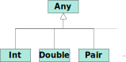
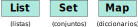

Introducción a Kotlin
Máster en Ingeniería Informática
Facultad de Informática
Universidad Complutense de Madrid
- Introducción a Kotlin
- Variables y tipos
- Sentencias y expresiones
- Colecciones
- Funciones
Introducción a Kotlin
¿Qué es Kotlin?
- Lenguaje de programación creado por JetBrains en 2011.
- Versión actual: 1.7 (junio de 2022)
- Filosofía de diseño:
- Pragmático: no impone un paradigma concreto.
- Conciso: evitar código boilerplate [+].
- Seguro: evitar los accesos a punteros nulos.
- Interoperable con Java y sus librerías.
- Desde 2019 es el lenguaje de preferencia para la creación de aplicaciones en Android.
Principales características de Kotlin
- Multiparadigma
- Mezcla características de programación funcional y de programación orientada a objetos.
- Estáticamente tipado
- Toda variable y expresión tiene un tipo, determinado en tiempo de compilación.
- Las discrepancias de tipo se detectan al compilar el programa.
- Multiplataforma
- Inicialmente pensado para ser compilado a bytecode de la JVM, pero ahora puede ser compilado a código Javascript o a código nativo
Primer programa en Kotlin
/*
* PrimerPrograma.kt
*/
fun main() {
println("¡Hola, mundo!")
}
Aspectos generales
- Comentarios similares a los de Java/C++:
// Comentario de una línea /* Comentario de varias líneas */ - Declaración de funciones/métodos mediante
fun.- Por defecto son públicos (
public)
- Por defecto son públicos (
-
La función principal del programa se llama
mainy puede recibir parámetros:fun main(args: Array<String>) { // ... }
Funciones definidas fuera de clases
- Java: funciones siempre definidas dentro de clases.
-
Kotlin: esto no es necesario. Si tenemos:
la función// Fichero PrimerPrograma.kt fun f() { ... }fpertenece a una clase cuyo nombre es el del fichero en el que está definida:class PrimerProgramaKt { public static void f() { // ... } }
Variables y tipos
Declaración de variables
valyvarsirven para declarar e inicializar variables.valno permite reasignación:val x: Int = 1 // OK val s: String = "Hola" // OK val y: Int = x + 3 // OK println(y) // Imprime: 4 x = x + 3 // Errorvarsí permite reasignación:var x: Int = 1 // OK x = x + 3 // OK println(x) // Imprime: 4
val en el 99% de los casos
Declaración de variables
- El tipo de la variable es opcional si puede inferirse del valor asignado.
val x = 1 val s = "Hola" val y = x + 3 var z = 1
Mutabilidad de variables
- Aunque una variable esté definida mediante
val, el valor apuntado por ella sí podría cambiar, en caso de ser mutable.
val x: Array<Int> = arrayOf(1, 5, 6) Los arrays son mutables
x[1] = 4 // OK
- Lo que no puede modificarse es la referencia en sí.
val x: Array<Int> = arrayOf(1, 5, 6)
x = arrayOf(4, 2) // ERROR
Además, los tipos básicos (Int, String, etc.) son inmutables.
Tipos de datos básicos
- En Java existe distinción entre tipos primitivos y tipos objeto.
- Tipos primitivos:
int,boolean,char,double. - Tipos objeto:
Integer,Boolean,Character,Double.
- Tipos primitivos:
- En Kotlin todos los tipos se consideran objetos.
- El tipo
Inten Kotlin equivale a los tiposinteIntegeren Java. - El compilador determina si una variable
Intse representa internamente como un tipo primitivo o como un tipo objeto.
- El tipo
Tipos de datos básicos
- Numéricos:
Int,Byte,Short,Long,Double,Float.Byte8 bits Short16 bits Int32 bits Long64 bits Float32 bits Double64 bits val x = 4.04 // Tipo Double val y = 34 // Tipo Int val z = 2034L // Tipo Long
Tipos de datos básicos
- Caracteres:
Charval c1 = '7' val c2 = '\n' val n: Int = c1.digitToInt() // n toma el valor 7 - Booleanos:
Booleanval b1 = true val b2 = false val b3 = b1 && b2 && es el operador AND val b4 = !b3 ! es el operador NOT val b5 = b1 || b2 || es el operador OR
Tipos de datos básicos
- Cadenas de caracteres:
Stringval nombre = "Diana" val vacia = "" - Mediante la sintaxis
${..}es posible evaluar expresiones dentro de cadenas.val nombre = "Diana" val edad = 38 println("Me llamo $nombre y tengo $edad años") println("Pero el año que viene tendré ${edad + 1} años") - Acceso a caracteres de una cadena:
val nombre = "Diana" val c: Char = nombre[0] // c = 'D' nombre[0] = 'X' // ERROR: las cadenas son inmutables
Tipos de datos básicos
- El tipo
Array<T>representa los arrays cuyos elementos son de tipoT.// Construcción de un array val a: Array<Int> = arrayOf(1, 6, 3, 5) // a = [1, 6, 3, 5] val b = Array(5) { 0 } // b = [0, 0, 0, 0, 0] println(a[0]) // 1 println(a.size) // 4 println(a.indices) // 0..3 (de tipo IntRange, utilizado en bucles) - Los arrays son mutables:
val a: Array<Int> = Array(4) { 0 } a[2] = 10 println(a[2]) // 10
El tipo Pair<A, B>
- Representa una tupla de dos componentes (un par).
- Útil para devolver varios resultados desde una función.
- La primera componente tiene tipo
Ay la segunda tiene tipoB.
val p = Pair(1, 'b') // p: Pair<Int, Char>
println(p.first) // Imprime: 1
println(p.second) // Imprime: b
// Sintaxis alternativa para obtener las componentes de un par
val (x1, x2) = p
println("($x1, $x2)") // Imprime: (1, b)
Otros tipos especiales
Any. Es la raíz de la jerarquía de tipos. Todos los tipos de Kotlin son subtipos deAny.
Otros tipos especiales
Unit. Solamente tiene un elemento, del mismo nombre. Equivale al tipovoiden otros lenguajes:fun saludar(nombre: String): Unit { La función no devuelve nada println("Hola, $nombre") return Unit }equivale afun saludar(nombre: String) { println("Hola, $nombre") }
Otros tipos especiales
Nothing. Indica la ausencia de valores. Si el tipo de retorno de una función esNothing, esa función nunca termina correctamente.fun fail(mensaje: String): Nothing { throw IllegalStateException(mensaje) }- El tipo
Nothinges subtipo de cualquier otro. - Función predefinida:
fun TODO(): Nothing
Conversiones entre tipos de datos
- Existen métodos de conversión entre los distintos tipos de datos:
val i = 23 // i: Int = 23
val d = i.toDouble() // d: Double = 23.0
val s = i.toString() // s: String = "23"
val j = "45".toInt() // j: Int = 45
Igualdad (==) vs Identidad (===)
- El operador
==comprueba si dos elementos son iguales.- similar al método
.equals()de Java
- similar al método
- El operador
===comprueba si dos elementos apuntan al mismo objeto.- similar al operador
==de Java
- similar al operador
Igualdad (==) vs Identidad (===)
val p1 = Pair(4, 5)
val p2 = Pair(4, 5)
val p3 = p1
val p4 = Pair(6, 7)
println(p1 == p2) // true
println(p1 === p2) // false
println(p1 === p3) // true
println(p1 == p4) // false
Sentencias y expresiones
Sentencias y expresiones
En un lenguaje de programación, ¿cuál es la diferencia entre sentencias y expresiones?
- Las expresiones son construcciones sintácticas que se evalúan a valores.
- Estos valores pueden asignarse a variables, pasarse como parámetros, etc.
- Las sentencias son las instrucciones que ejecuta un programa.
Condicionales: if
- Aparentemente son similares a los de cualquier otro lenguaje:
if (edad >= 18) { println("Eres mayor de edad") } else { println("No eres mayor de edad") } - Pero, en Kotlin,
iftambién puede usarse como expresión:
Es similar al operadorval mensaje = if (edad >= 18) "Mayor" else "Menor"?:en otros lenguajes.
Condicionales: if
Cuando un if se utiliza como expresión:
- Es obligatorio el uso de
else.val x = if (y > 0) 5 // Incorrecto. // ¿Qué valor tomaría x si no se cumple y > 0? - Cada rama puede tener un bloque delimitado por
{...}, con una expresión al final.val nuevaPos = if (direccion == "Este") { println("Voy en dirección este") pos + 10 Expresión } else { println("Voy en dirección oeste") pos - 10 Expresión }
Condicionales: when
- Permite comparar el resultado de una expresión con distintos valores:
Es similar alwhen (diaActual) { "Lunes" -> println("Ugh") "Viernes" -> println("¡Viva!") else -> println("Meh") }switchde otros lenguajes de programación. - También se puede utilizar como expresión:
println(when (diaActual) { En este caso la distinción ha de ser excluyente... "Lunes" -> "Ugh" "Viernes" -> "¡Viva!" else -> "Meh" ...o tener una rama else })
Condicionales: when
- Es posible utilizar cualquier objeto como discriminante de
when, aunque no sea de tipo básico:
Kotlin utiliza el operador de igualdad (val mezcla = when (setOf(color1, color2)) { setOf("amarillo", "azul") -> "verde" setOf("rojo", "amarillo") -> "naranja" setOf("rojo", "azul") -> "violeta" else -> "ni idea" }==) para comparar el discriminante con cada una de las alternativas.
Condicionales: when
- Es posible utilizar
whensin discriminante para hacer distinciones de casos múltiples:val cuadrante = when { x > 0 && y > 0 -> "I" x < 0 && y > 0 -> "II" x < 0 && y < 0 -> "III" x > 0 && y < 0 -> "IV" else -> "Ninguno" }Alternativa a encadenar
if...else if...else if...
Bucles: while y do...while
Similares a los de cualquier lenguaje de programación:
while (condicion) {
// ....
}
do {
// ....
} while (condicion)
Bucles: for
- Siempre tienen la forma
for (x in xs), dondexes una variable yxses una colección o un rango: - Ejemplos con rangos:
for (x in 1..10) { println(x) } // 'x' toma los valores 1, 2, ..., 10for (x in 1 until 10) { println(x) } // 'x' toma los valores 1, 2, ..., 9for (x in 10 downTo 1) { println(x) } // 'x' toma los valores 10, 9, ..., 1for (x in 1..10 step 2) { println(x) } // 'x' toma los valores 1, 3, 5, 7, 9
Bucles: for
Ejemplos con colecciones:
val dias = listOf("Lunes", "Martes", "Miércoles", ...)
for (d in dias) {
println(d)
}
val xs: Array<Int> = ...
val (x in xs) {
println(x)
}
val (i in xs.indices) { // equivale a "i in 0 until xs.size"
println("xs[$i] = ${xs[i]}")
}
for 😧
Excepciones
- Son similares a las de Java y C++.
try { val x = Integer.parseInt(cadena) println(x) } catch (e: NumberFormatException) { println("No es un número") } - A diferencia de Java, no es necesario declarar las excepciones que puede lanzar un método (
throws).
Excepciones
- Diferencia con Java y C++: los bloques
try...catchtambién pueden ser expresiones:println( try { Integer.parseInt(cadena) } catch (e: NumberFormatException) { "No es un número" } )
Colecciones
Colecciones
- Interfaces definidas en el paquete
kotlin.collections:
- Para utilizarlas, hay que importar las interfaces del respectivo paquete:
o bien,import kotlin.collections.Listimport kotlin.collections.*
Colecciones
- Estos tres tipos de colecciones son inmutables. Una vez creadas, no es posible añadir o eliminar elementos.
Listas
- El tipo
List<T>denota las listas cuyos elementos son de tipoT. - Creación de listas:
val l: List<Int> = listOf(10, 43, 2, 25) val l2: List<Any> = listOf("Pepe", 5.6, Pair(1, 4)) - Algunos métodos sobre listas [+]:
l[1] // → 43 l.size // → 4 l.contains(5) // → false l.indexOf(25) // → 3 l.subList(1, 4) // → [43, 2, 25]
Conjuntos
- El tipo
Set<T>denota los conjuntos cuyos elementos son de tipoT. - Creación de conjuntos:
val s: Set<String> = setOf("Daniel", "Clara", "Francisco", "Clara") - Algunos métodos sobre conjuntos [+]:
s.isEmpty() // → false s.contains("Clara") // → true s.size // → 3
Diccionarios
- El tipo
Map<K, V>denota los diccionarios cuyas claves tienen tipoKy cuyos valores tienen tipoV. - Creación de diccionarios:
o bienval d: Map<String, Int> = mapOf(Pair("Javier", 23), Pair("Estela", 21), Pair("Juan", 23))val d: Map<String, Int> = mapOf("Javier" to 23, "Estela" to 21, "Juan" to 23)
Diccionarios
Algunas operaciones sobre diccionarios [+]:
d.size // → 3
d["Estela"] // → 21
d["Nadie"] // → null
d.containsKey("Susana") // → false
d.keys // → {Javier, Estela, Juan}
Colecciones inmutables
- Los tres tipos vistos ahora representan colecciones inmutables.
- Existen operaciones para añadir y eliminar elementos, pero devuelven una colección nueva, en lugar de modificar la ya existente:
val l = listOf(10, 43, 2, 25) val l2 = l + 23 println(l2) // → [10, 43, 2, 25, 23] println(l) // → [10, 43, 2, 25]
Colecciones inmutables
val s = setOf("Daniel", "Clara", "Francisco", "Clara")
val s2 = s - "Francisco"
println(s2) // → {"Daniel", "Clara"}
val d = mapOf("Javier" to 23, "Estela" to 21, "Juan" to 23)
val d2 = d + ("Ana" to 31)
println(d2) // → {Javier=23, Estela=21, Juan=23, Ana=31}
val d3 = d2 - "Estela"
println(d3) // → {Javier=23, Juan=23, Ana=31}
Colecciones mutables
Existen interfaces con variantes mutables de las anteriores:
Colecciones mutables
Ejemplos de uso:
val ml = mutableListOf(10, 54, 32, 55)
ml.add(23)
// ml = [10, 54, 32, 55, 23]
ml[2] = 13
// ml = [10, 54, 13, 55, 23]
ml.clear()
// ml = []
val md = mutableMapOf(1 to "Lunes", 2 to "Martes")
md.put(3, "Miércoles")
md[7] = "Domingo"
// md = {1=Lunes, 2=Martes, 3=Miércoles, 7=Domingo}
Collection / Iterable
Son interfaces de las que provienen List y Set:
Collection / Iterable
Collectioncontiene propiedades y métodos básicos sobre colecciones [+].size,contains(),isEmpty(), ...
Iterablepermite producir objetosIterator<T>para realizar recorridos [+]:- Métodos de
Iterator:hasNext()ynext() - Los objetos que implementan la interfaz
Iterablepueden ser recorridos mediante buclesfor:for (x in xs) { ... }
- Métodos de
Funciones
Definición de funciones
- Las definiciones de funciones tienen la siguiente estructura:
dondefun nombre(x1: T1, ..., xn: Tn): T { // ... }T1, ...,Tnson los tipos de los parámetros yTes el tipo del valor devuelto por la función. - Ejemplo:
fun maximo(x: Int, y: Int): Int { if (x >= y) { return x } else { return y } } println(maximo(4, 3))
Definición de funciones
- Como
ifes una expresión, la definición anterior puede reescribirse del siguiente modo:fun maximo(x: Int, y: Int): Int { return if (x >= y) x else y } - Si el cuerpo de una función es de la forma
return exp, puede simplificarse del siguiente modo:fun maximo(x: Int, y: Int): Int = if (x >= y) x else y - En este último caso, puede omitirse el tipo del resultado:
fun maximo(x: Int, y: Int) = if (x >= y) x else y
Definición de funciones
Otros ejemplos:
fun cuadrado(x: Int) = x * x
fun sumaDeCuadrados(x: Int): Int {
val x2 = cuadrado(x)
return x2 + x2
}
fun abs(x: Int) = if (x >= 0) x else -x
fun signo(x: Int) = when {
x > 0 -> 1
x < 0 -> -1
else -> 0
}
Funciones paramétricas
- Son funciones que pueden tratar parámetros de distintos tipos.
- Equivalen a los generics en Java y a los templates de C++.
Parámetros de tipo
fun <T> contar(arr: Array<T>, elem: T): Int {
// Devuelve el número de veces que aparece `elem` en `arr`
var numVeces = 0
for (x in arr) {
if (x == elem) {
numVeces++
}
}
return numVeces
}
Funciones paramétricas
- Cuando llamamos a una función genérica, podemos indicar los parámetros de tipo con los que queremos aplicarla:
println(contar<Int>(arrayOf(5, 1, 7, 7, 1), 1)) // Imprime: 2 println(contar<Double>(arrayOf(4.3, 1.2, 0.0), 1.0)) // Imprime: 0aunque, en la mayoría de los casos, este parámetro se infiere automáticamente:println(contar(arrayOf(5, 1, 7, 7, 1), 1)) // Imprime: 2 println(contar(arrayOf(4.3, 1.2, 0.0), 1.0)) // Imprime: 0
Parámetros por defecto
- Supongamos la siguiente función:
fun delimitar(s: String, antes: String, despues: String) = antes + s + despues delimitar("Manuel", "(", ")") // → (Manuel) delimitar("Manuel", "[", "]") // → [Manuel] -
Es posible especificar valores por defecto para los parámetros:
fun delimitar(s: String, antes: String = "(", despues: String = ")") = antes + s + despues delimitar("Hola") // → (Hola) delimitar("Hola", "[") // → [Hola) delimitar("Hola", "<", ">") // → <Hola>
Parámetros con nombre
- También es posible indicar explícitamente el nombre de los parámetros en las llamadas a función:
delimitar(s = "Manuel", antes = "(", despues = ")") - Esto permite alterar el orden de los parámetros en la llamada:
delimitar(despues = "]", s = "Manuel")
Número variable de argumentos
- Mediante
varargpodemos conseguir que una función acepte un número variable de argumentos:fun imprimirTodos(vararg elems: Any) { // Dentro de la función, 'elems' tiene tipo // Array<String> for (e in elems) { println("Imprimiendo $e") } } imprimirTodos(5, "Juana", 34.2, Pair(2, 3)) - Esto se ve, por ejemplo, en la librería estándar:
val l = listOf(1, 5, 7, 22) // fun <T> listOf(vararg elements: T): List<T> val d = mapOf(Pair("A", 2), Pair("B", 4)) // fun <K, V> mapOf(vararg pairs: Pair<K, V>): Map<K, V>
Funciones de extensión
- En Kotlin, todo valor es un objeto, y dispone de métodos:
val ls: List<Int> = listOf(1, 2, 4) println(ls.contains(3)) // → false println(4.toDouble()) // → 4.0 println(" Mi cadena ".trim()) // → Mi cadena - Los métodos de un objeto suelen estar definidos dentro de la clase correspondiente al objeto.
- Sin embargo, Kotlin permite definir métodos de una clase fuera de la definición de la misma.
- «Extendemos» la clase añadiendo nuevos métodos.
Funciones de extensión
- Para añadir un método a una clase, basta con indicar el nombre de la clase antes del nombre de la función a definir:
fun String.delimitar(antes: String = "(", despues: String = ")") = antes + this + despuesDentro del método se utiliza
thispara hacer referencia al objeto que recibe la llamada. - Ejemplo de uso:
"Gerardo".delimitar("[", "]") // → "[Gerardo]" "Adios".delimitar() // → "(Adios)"
¿Cómo funcionan las extensiones?
¿Realmente se extiende la clase con nuevos métodos?
- No. En Java (y en Kotlin) no es posible alterar una clase una vez definida.
- Las funciones extensión son azúcar sintáctico para funciones «normales» que reciben
thiscomo primer parámetro.
¿Cómo funcionan las extensiones?
- Por ejemplo:
equivale a:fun Int.incrementar() = this + 1public static int _incrementar(int _this) { return _this + 1 } - La llamada a la función de extensión
incrementar:
sería equivalente a la llamada6.incrementar()_incrementar(6)del método estático anterior.
Definiciones locales de funciones
Es posible definir funciones dentro de otras funciones, cuyo ámbito será local a la función en la que se definen:
fun validarDatos(nombre: String, apellidos: String, direccion: String) {
fun comprobarNoVacia(cadena: String, parametro: String) {
if (cadena.isEmpty()) {
throw IllegalArgumentException("$parametro no válido")
}
}
comprobarNoVacia(nombre, "nombre")
comprobarNoVacia(apellidos, "apellidos")
comprobarNoVacia(direccion, "direccion")
}
La función comprobarNoVacia no es visible fuera de validarDatos
Definiciones locales de funciones
También se pueden definir funciones de extensión locales a otra:
fun validarDatos(nombre: String, apellidos: String, direccion: String) {
fun String.comprobarNoVacia(parametro: String) {
if (this.isEmpty()) {
throw IllegalArgumentException("$parametro no válido")
}
}
nombre.comprobarNoVacia("nombre")
apellidos.comprobarNoVacia("apellidos")
direccion.comprobarNoVacia("direccion")
}
El modificador infix
- Supongamos una función de extensión con un parámetro:
fun Int.suma(otro: Int) = this + otro println(6.suma(7)) // → 13 - Mediante el modificador
infixes posible llamar a la función como si fuera un operador infijo:- A la izquierda del nombre de la función se coloca el argumento
thisy a la derecha el parámetro que recibe la función.
infix fun Int.suma(otro: Int) = this + otro println(6 suma 7) // → 13 - A la izquierda del nombre de la función se coloca el argumento
El modificador infix
- Por ejemplo, el operador
toutilizado para definir diccionarios,val d = mapOf(1 to "Uno", 2 to "Dos")en realidad es una función de extensión con el modificadorinfix:infix fun <A, B> A.to(other: B): Pair<A, B> = Pair(this, other) - La expresión
1 to "Uno"equivale a1.to("Uno")
Bibliografía
- D. Jemerov, S. Isakova
Kotlin in Action
Manning Publications (2017) -
Kotlin Standard Library
https://kotlinlang.org/api/latest/jvm/stdlib/